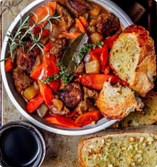

Vegan beef bourguignon
Traditional beef, or boeuf, bourguignon is a
beef stew has lots of flavor
from rich red wine,
beef stock, and carrots. Other common
ingredients that go
in traditional beef
bourguignon are mushrooms, pearl onions, and
bacon.

Roasted Pork With Holiday Jam Pan Sauce
This is a festive and flavorful dish that combines
the savory richness of roasted
pork with a delightful
pan sauce made from holiday jam. This recipe is a
celebration
of seasonal flavors and is perfect for
holiday gatherings or special occasions.